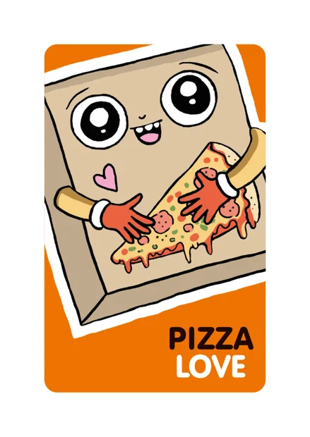
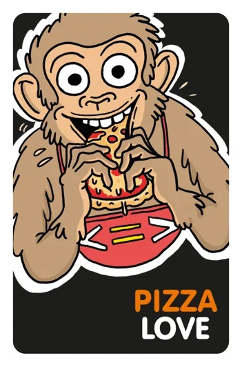
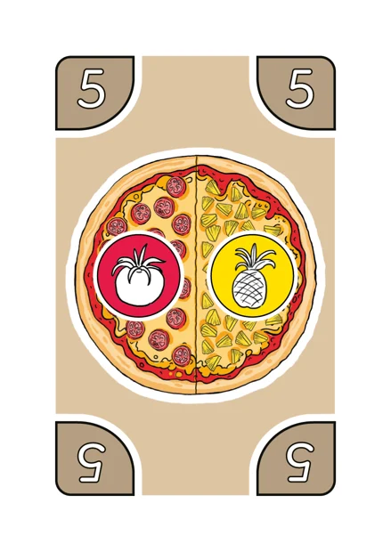
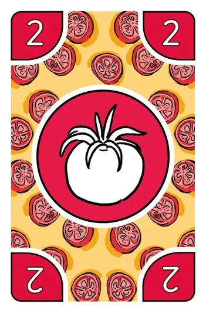
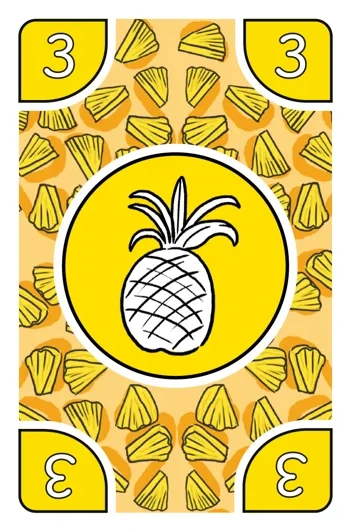

Jeu de cartes Pizza Love®
Trois jeux avec un seul paquet. Commence par Pizza Party : c’est le plus rapide à apprendre.
- 2 à 5 joueurs
- dès 6 ans
- 42 cartes pizza
- 58 cartes ingrédient
- 5 à 15 min
Comment préparer une pizza
Les trois jeux suivent la même règle de base. Apprends-la d’abord.

Cartes pizza
Une carte pizza montre une pizza avec un à quatre ingrédients différents. La valeur de la pizza (1–10) est indiquée dans les coins. Le jeu contient 10 pizzas cœur de valeur 10.

Cartes ingrédient
Une carte ingrédient montre un ingrédient. La valeur de l’ingrédient (1–10) est indiquée dans les coins. Les 3 ingrédients fantaisie (X) peuvent être n’importe quel ingrédient.
Règle de base
Les cartes pizza sont toujours sur la table. Tu les prépares avec les cartes ingrédient de ta main.
Valeur de la pizza
Prépare une pizza avec tes cartes ingrédient et dis à voix haute le calcul qui donne la valeur de la pizza. Tous les calculs sont permis et peuvent être combinés, tant que le résultat est égal à la valeur de la pizza. Par exemple 5 = 2 + 4 – 1.
Exemple : pizza tomate-ananas

=
+
La pizza a deux ingrédients et sa valeur est 5. Tomate 2 + ananas 3 = 5. Il y a d’autres façons : 4 + 1, 6 – 1 ou même 10 : 2.
Deux façons de préparer une pizza
La façon la plus facile
Tu peux préparer une pizza avec autant de cartes ingrédient que tu veux, même une seule. Utilise cette façon quand tu joues à Pizza Party pour la première fois ou avec un jeune enfant.
La méthode du singe Basso
Utilise autant d’ingrédients différents que la pizza a d’ingrédients. Tu peux utiliser plus de cartes : la pizza tomate-ananas (valeur 5) peut se faire avec deux tomates et une olive, 2 + 2 + 1 = 5, car il y a deux sortes d’ingrédients. Utilise cette façon dans Pizza Basso, ou pour un défi en plus dans Pizza Party.
Les règles imprimées disent encore « autant de cartes ingrédient que la pizza a d’ingrédients ». La nouvelle façon donne plus de possibilités au jeu.
Bruno ou Basso ? Le singe du jeu s’appelle maintenant Basso. Dans les anciennes règles et vidéos, il s’appelle Bruno, et le deuxième mode de jeu s’appelle Pizza Bruno. Les règles sont les mêmes.
Trois façons de jouer
Ouvre un mode de jeu pour voir ses règles et ses vidéos.
#1Pizza PartyLe plus facile pour commencer, rapide et animé · env. 5 min
Vidéos
But du jeu
Les joueurs font la course pour préparer des pizzas. Le gagnant est celui qui prépare le plus de pizzas avant qu’il n’y ait plus de cartes pizza ou de cartes ingrédient.
Mise en place
- Mélange les cartes pizza et pose-les en pile à portée de tous les joueurs.
- Mélange les cartes ingrédient et distribues-en 5 à chaque joueur. Les autres forment la pioche. Les joueurs peuvent regarder leurs cartes.
Début de la partie
Retourne la première carte pizza face visible à côté de la pile. Tous les joueurs essaient aussitôt de préparer cette pizza avec leurs cartes ingrédient.
Déroulement
- On joue sans tours : tout le monde essaie de préparer des pizzas en même temps.
- Le joueur le plus rapide à préparer la pizza prend la carte et la garde devant lui.
- Les cartes ingrédient utilisées sont retirées du jeu. Pioche de nouvelles cartes jusqu’à avoir de nouveau 5 cartes en main.
- Retourne tout de suite une nouvelle carte pizza. Continuez jusqu’à ce qu’il n’y ait plus de cartes pizza ou de cartes ingrédient et que personne ne puisse plus préparer de pizza.
Si une pizza ne peut pas être préparée
Si personne ne peut ou ne veut préparer la pizza sur la table, retourne une nouvelle carte pizza par-dessus. Le joueur qui prépare la pizza suivante prend toutes les pizzas sur la table.
Points et victoire
Pizza normale = 1 point, pizza cœur = 2 points. Le joueur qui a le plus de points gagne la manche. Mettez-vous d’accord sur le nombre de manches : par exemple, le premier à gagner 3 ou 5 manches gagne la partie.
Pizza Party au tour par tour
Vous pouvez aussi jouer chacun à votre tour, pour que chaque joueur ait le temps de réfléchir pendant son tour.
Règles optionnelles
Vous pouvez choisir des règles qui limitent les calculs, par exemple :
- jouer seulement avec des additions et des soustractions
- chaque pizza doit contenir une multiplication ou une division.
#2Pizza BassoCalme et palpitant · env. 7 min
Vidéos
Dans les anciennes règles : Pizza Bruno.
But du jeu
Les joueurs essaient de se débarrasser de toutes leurs cartes ingrédient. Le premier qui y arrive gagne la manche.
Remarque : les pizzas se préparent selon la méthode du singe Basso : utilise autant d’ingrédients différents que la pizza a d’ingrédients. Tu peux utiliser plus de cartes, par exemple deux olives.
Mise en place
- Mélange les cartes pizza et pose-les en pile à portée de tous les joueurs.
- Mélange les cartes ingrédient et distribues-en 7 à chaque joueur. Les autres forment la pioche. Les joueurs peuvent regarder leurs cartes.
Début de la partie
Retourne la première carte pizza face visible à côté de la pile. Le dernier joueur à avoir mangé une pizza commence.
Déroulement
À tour de rôle, les joueurs essaient de préparer la pizza sur la table avec leurs cartes ingrédient.
A) Si tu réussis : retire du jeu les cartes ingrédient utilisées et retourne une nouvelle carte pizza de la pile sur l’ancienne. C’est au tour du joueur suivant.
B) Si tu ne peux pas ou ne veux pas préparer la pizza : pioche une carte ingrédient. C’est au tour du joueur suivant.
C) Plus qu’une carte : quand il ne te reste qu’une carte ingrédient, fais comme le singe Basso affamé et crie : « PIZZAAA ! »
Si les cartes ingrédient sont épuisées
Mélange les cartes ingrédient défaussées pour former une nouvelle pioche et continuez.
Points et victoire
Le premier joueur à se débarrasser de toutes ses cartes ingrédient gagne la manche. On additionne les valeurs des cartes qui restent dans la main des autres joueurs : ce total donne les points du gagnant. Un ingrédient normal compte sa valeur (1–10), un ingrédient fantaisie compte 20.
Le premier à atteindre 100 points gagne et reçoit le titre de Pizza Basso – le vrai singe de la pizza.
Partie plus courte
Vous pouvez décider que la partie s’arrête, par exemple, à 30 ou 50 points, ou que le premier à gagner 3 ou 5 manches gagne la partie.
#3Pizza LoveLe plus tactique et le plus exigeant, dès 8 ans · env. 15 min
But du jeu
Les joueurs essaient de préparer toutes leurs pizzas avant les autres. Le premier qui y arrive gagne.
Remarque : maintenant, les ingrédients comptent : une pizza ne peut être préparée qu’avec les bons ingrédients.
Mise en place
- Mélange les cartes pizza et distribues-en 8 à chaque joueur. Les joueurs les posent face cachée en pile devant eux et retournent la carte du dessus.
- Pose une carte pizza face visible au milieu de la table : c’est la pizza d’échange. Retire du jeu les autres cartes pizza.
- Mélange les cartes ingrédient et pose-les sur la table pour former la pioche.
Réserve
Chaque joueur a 4 emplacements de réserve. Les cartes ingrédient de la réserve sont face visible. Tu peux les utiliser pour tes pizzas comme les cartes de ta main, et les autres joueurs peuvent les utiliser pour des échanges.
Début de la partie
Le dernier joueur à avoir mangé une pizza commence et pioche 5 cartes ingrédient.
Déroulement
- Pioche des cartes ingrédient jusqu’à avoir 5 cartes en main.
- Essaie de préparer la pizza du dessus de ta pile avec les cartes de ta main et de ta réserve.
- Tu peux échanger des cartes de ta réserve contre des cartes de la réserve d’un autre joueur, à l’aide de calculs.
- Une fois par tour, tu peux échanger la pizza du dessus de ta pile contre la pizza d’échange du milieu. Tu peux la préparer tout de suite.
- Termine ton tour en posant une carte ingrédient de ta main face visible dans ta réserve.
Préparer une pizza
Quand tu as les ingrédients nécessaires dans ta main et/ou ta réserve, prépare la pizza. La carte pizza et les cartes ingrédient utilisées sont retirées du jeu. Retourne la carte pizza suivante de ta pile : si tu as les ingrédients, tu peux la préparer tout de suite.
Pizza cœur
Quand tu prépares une pizza cœur, donne ta carte pizza suivante (sans la regarder) à un autre joueur. Il la place sous sa pile.
Échanger des cartes de réserve
Obtiens les ingrédients qui te manquent en échangeant des cartes de ta réserve contre des cartes de la réserve d’un autre joueur. L’échange se fait avec des calculs : tout est permis, tant que le résultat est le même sur les cartes des deux joueurs. Tu peux faire plusieurs échanges par tour, mais chaque échange se fait toujours entre deux réserves. Une carte placée sous une autre carte ne peut pas être échangée. Place les cartes reçues dans ta réserve dans l’ordre que tu veux.
Remplir la réserve
Si ta main est vide avant que tu aies posé une carte dans ta réserve, pioche 5 nouvelles cartes et continue ton tour. Les emplacements de réserve peuvent être remplis dans n’importe quel ordre et les cartes peuvent être empilées. La carte du dessus doit toujours être utilisée avant celles du dessous. Une fois posées, les cartes de réserve ne peuvent plus être déplacées.
Gagner la partie
La partie se termine quand un joueur a préparé toutes les pizzas de sa pile.

Règles en PDF
La feuille de règles imprimée, en finnois, en suédois et en anglais.

Ensuite : le jeu de plateau Pizza Love®
Le même univers de pizzas sur un plateau : prépare les pizzas préférées des boîtes à pizza et sois le premier à réunir 10 parts différentes. Trois façons de jouer, dont un jeu coopératif.